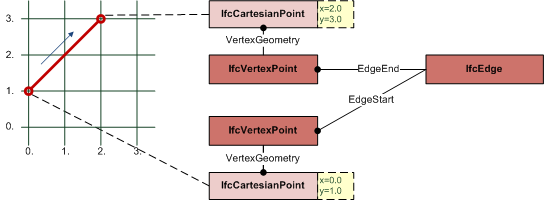
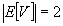
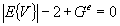

8.20.3.4 IfcEdge
An IfcEdge defines two vertices being connected topologically. The geometric representation of the connection between the two vertices defaults to a straight line if no curve geometry is assigned using the subtype IfcEdgeCurve. The IfcEdge can therefore be used to exchange straight edges
without an associated geometry provided by IfcLine or IfcPolyline thought IfcEdgeCurve.EdgeGeometry.
 |
EXAMPLE Figure 387 illustrates an example where the bounds of the IfcEdge are given by the EdgeStart and EdgeEnd; this also determines the direction of the edge. The location within a coordinate space is determined by the IfcVertexPoint type for EdgeStart and EdgeEnd. Since no edge geometry is assigned, it defaults to a straight line agreeing to the direction sense. |
Figure 387 — Edge representation | |
NOTE Definition according to ISO/CD 10303-42:1992
An edge is the topological construct corresponding to the connection of two
vertices. More abstractly, it may stand for a logical relationship between two vertices. The domain of an edge, if
present, is a finite, non-self-intersecting open curve in RM, that is, a connected 1-dimensional
manifold. The bounds of an edge are two vertices, which need not be distinct. The edge is oriented by choosing its traversal
direction to run from the first to the second vertex. If the two vertices are the same, the edge is a self loop. The domain of the
edge does not include its bounds, and 0 ≤ Ξ ≤ ∞. Associated with an edge may be a geometric curve to locate the
edge in a coordinate space; this is represented by the edge curve subtype. The curve shall be finite and non-self-intersecting within
the domain of the edge. An edge is a graph, so its multiplicity M and graph genus Ge may be determined by the
graph traversal algorithm. Since M = E = 1, the Euler equation (1) reduces in the case to:

where V = 1 or 2, and Ge = 1 or 0. Specifically, the topological edge defining data shall satisfy:
- an edge has two vertices

- the vertices need not be distinct

- Equation shall hold

NOTE Entity adapted from edge defined in ISO 10303-42.
HISTORY New entity in IFC2.0
Informal Propositions:
- The edge has dimensionality 1.
- The extent of an edge shall be finite and nonzero.
Figure 388 illustrates edge usage.
 |
Figure 388 — Edge usage |
XSD Specification:
<xs:element name="IfcEdge" type="ifc:IfcEdge" substitutionGroup="ifc:IfcTopologicalRepresentationItem" nillable="true"/>
<xs:complexType name="IfcEdge">
<xs:complexContent>
<xs:extension base="ifc:IfcTopologicalRepresentationItem">
<xs:sequence>
<xs:element name="EdgeStart" type="ifc:IfcVertex" nillable="true" minOccurs="0"/>
<xs:element name="EdgeEnd" type="ifc:IfcVertex" nillable="true" minOccurs="0"/>
</xs:sequence>
</xs:extension>
</xs:complexContent>
</xs:complexType>
EXPRESS Specification:
 EXPRESS-G diagram
EXPRESS-G diagram
Attribute Definitions:
| EdgeStart | : | Start point (vertex) of the edge.
|
| EdgeEnd | : | End point (vertex) of the edge. The same vertex can be used for both EdgeStart and EdgeEnd.
|
Inheritance Graph:
 Link to this page
Link to this page